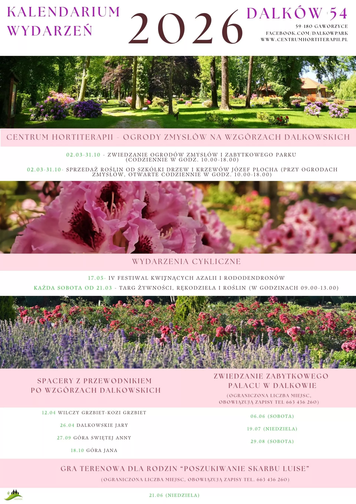
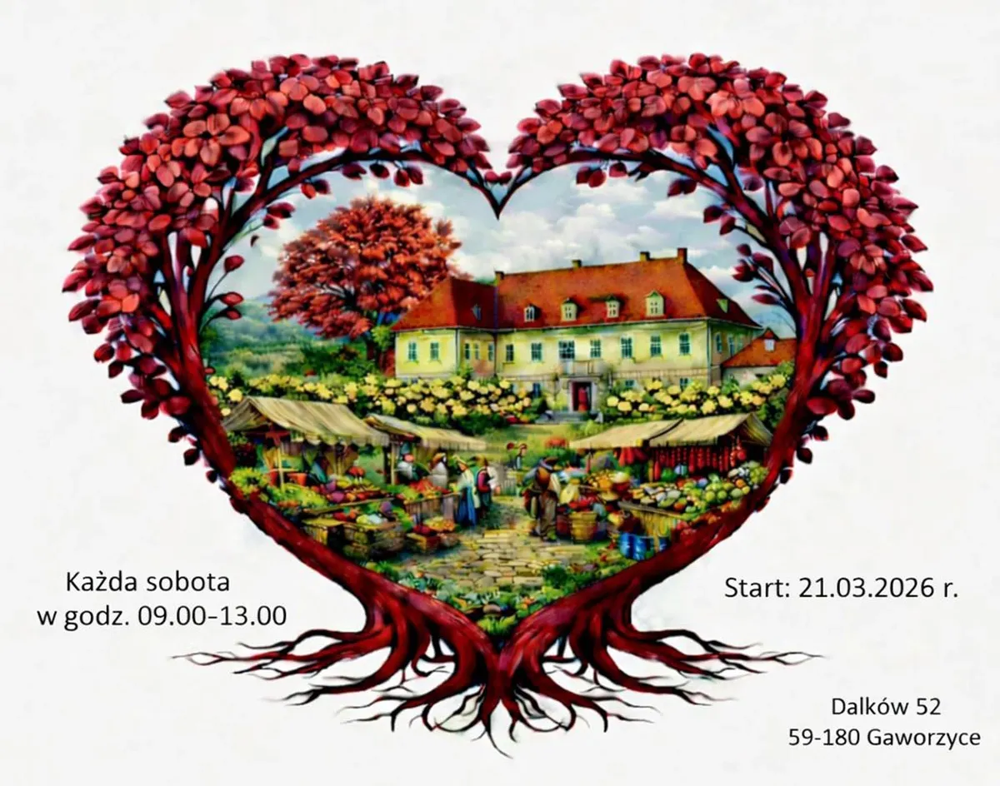
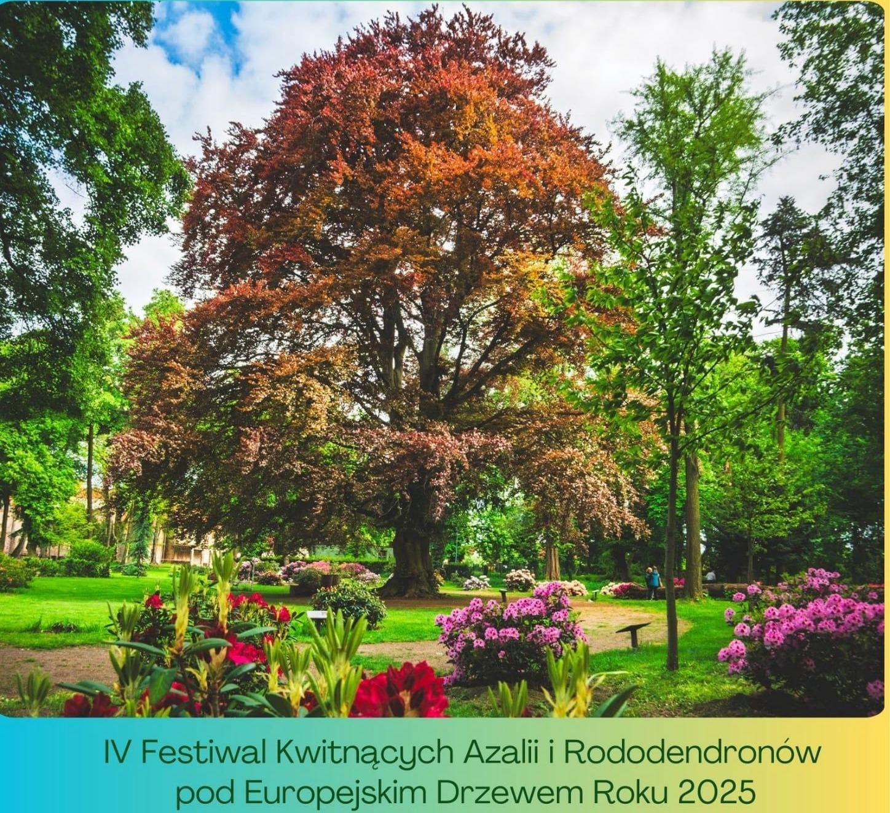
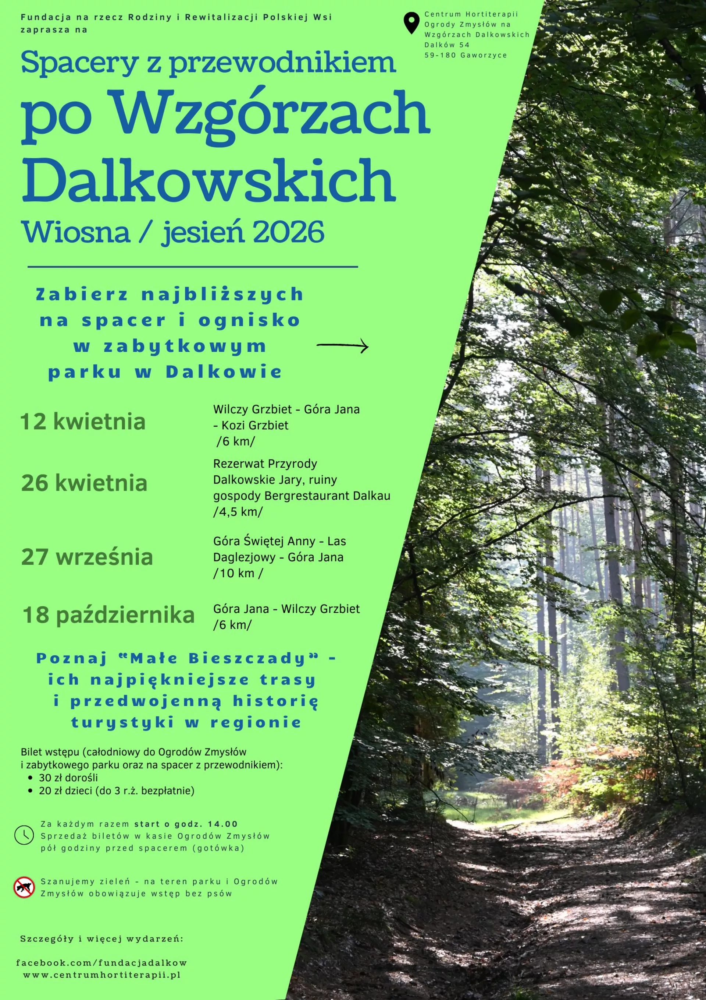
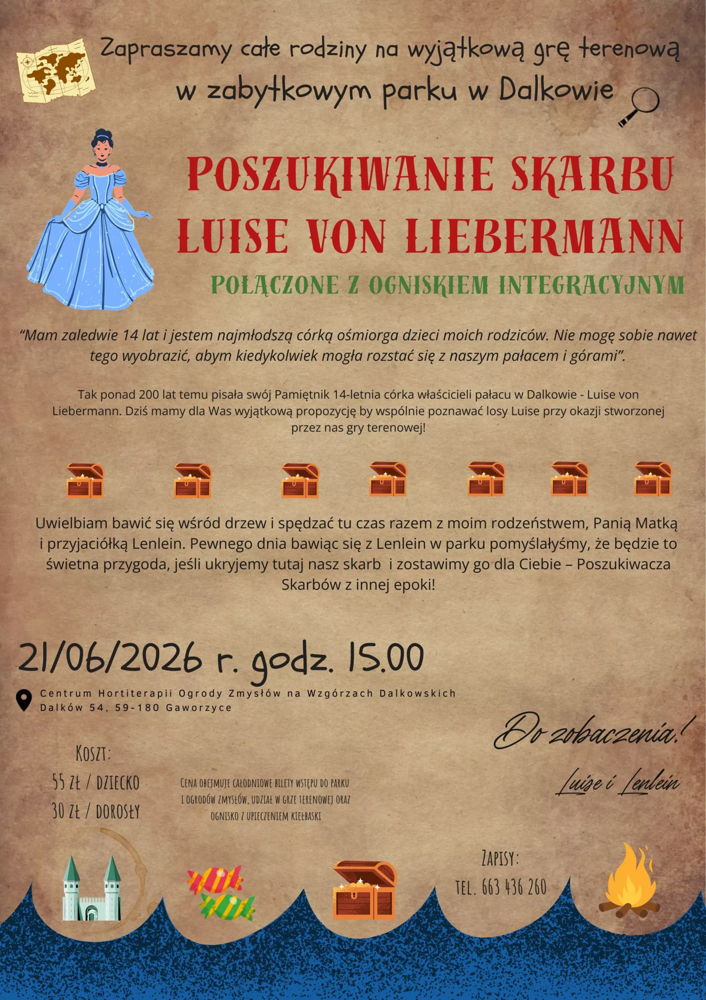

2026-03-21
Od 21.03,w każdą sobotę w godz. 9-13 Targ żywności, rękodzieła i roślin.
Lokalizacja: folwark przypałacowy
(Dalków 52, 59-180 Gaworzyce)

2026-05-17
Już 17 maja odbędzie się kolejna edycja Festiwalu w Dalkowie
Lokalizacja: park przypałacowy
(Dalków 52, 59-180 Gaworzyce)



Mobirise